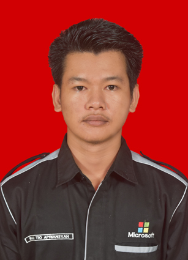

Tentang Saya

Raja Tio Apriansyah
Mahasiswa Sistem Informasi di Universitas Riau Indonesia dengan minat mendalam pada hardware PC dan pemrograman, bersemangat untuk membangun solusi teknologi yang efisien dan inovatif melalui pemahaman mendalam tentang arsitektur komputer dan pengembangan perangkat lunak.
Keahlian Teknis
C++
Java
Python
JavaScript
Microsoft Office
VS Code
Balsamic
Netbeans
Rakit PC
Konfigurasi Jaringan
Riwayat Pendidikan
- S1 Sistem Informasi
Universitas Riau Indonesia (2023 - Sekarang) - Teknik Komputer dan Jaringan
SMK Negeri 1 Rengat (Lulus 2022)
Pengalaman
- Ketua UKM ICTC UNRIDA
Bertanggung jawab atas program dan kegiatan UKM (2024) - Magang di SMPN 1 Rengat
Membantu administrasi dan dukungan teknis. - Pekerja Lepas Instalasi PJU
Instalasi dan pemeliharaan penerangan jalan umum.